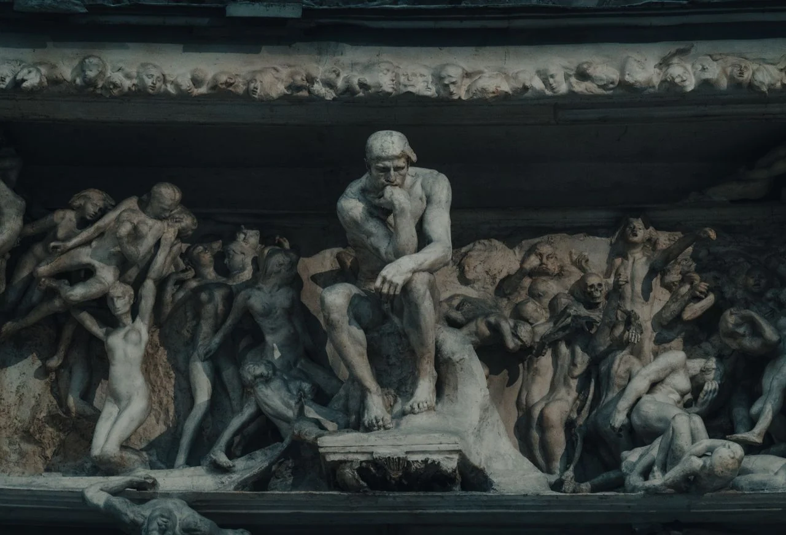

Yunan, İskandinav ve Mezopotamya geleneklerinden aktarılan mitler, farklı toplumların dünyayı ve insan deneyimini anlatma biçimlerini yansıtır. Psikanalistler bazı mitleri kuramsal yorumlarında kullanmış olsa da mitolojik bir karakter, klinik tanı ya da psikolojik araştırmanın kanıtı değildir. Bu yazı, mitlerle modern psikoloji arasındaki bağlantıları tarihsel ve eleştirel bir çerçevede ele alıyor.
Mitlerin Psikolojik İşlevi: Neden Hâlâ Yaşıyorlar?
Mitoloji, insanlığın en eski sembolik dilidir. İsviçreli psikanalist Carl Gustav Jung, mitleri kolektif bilinçdışı kuramı üzerinden yorumladı. Jung’a göre farklı kültürlerin mitlerinde yinelenen karakterler, temalar ve çatışmalar; türün evrimsel hafızasına kazınmış arketiplerle açıklanabilir (Jung, 1959; The Archetypes and the Collective Unconscious). Bu, Jung’un kuramsal yaklaşımıdır; arketiplerin biyolojik olarak kalıtıldığı veya bütün kültürlerde aynı biçimde bulunduğu doğrulanmış bir bilimsel sonuç değildir.
Jung’un arketipleri, mit ve simgelerde yinelenen örüntüleri açıklamak için önerdiği kavramlardır. Zeus, Odin ve Ra’yı tek bir “Büyük Baba” tipinin doğrudan karşılıkları saymak, kültürler arasındaki tarihsel farkları göz ardı edebilir. Aşağıdaki örneklerde mitolojik anlatılar ile psikolojik kuramları birbirinden ayırıyoruz.
Narkissos: Narsisizmin 2.500 Yıllık Portresi
Yunan mitolojisinde Narkissos, bir su kaynağında kendi yansımasına âşık olan ve bu yüzden kuruyup giden güzel bir gençtir. Ovid’in Metamorphoses’inde (MS 8) ayrıntıyla aktarılan bu hikâye; başkalarının sevgisini göremeyecek kadar kendine dalmış bir ruhun trajedisidir.
“Narsisizm” terimi Narkissos anlatısından türemiş, daha sonra psikoloji ve psikanalizde farklı anlamlarda kullanılmıştır. Freud 1914’te narsisizm üzerine yazdı; günümüzde Narsistik Kişilik Bozukluğu (NPD) ise DSM-5-TR’de klinik ölçütlerle tanımlanır. Tanı; yalnızca kendini beğenmek ya da bir mite benzemekle konmaz ve bir kişilik özelliğiyle bozukluk aynı şey değildir (Stinson ve diğerleri, 2008; Journal of Clinical Psychiatry).
Narkissos mitinde suya yansıyan görüntü, karakterin kendine yönelik tutkusunun anlatıdaki simgesidir; bu, anlatıda trajik bir kör nokta olarak yorumlanabilir. NPD’nin altında her durumda bilinçdışı bir yetersizlik korkusu bulunduğu gösterilmiş değildir. Psikodinamik yaklaşımlar narsisizmi farklı biçimlerde açıklarken, güncel tanı ölçütleri klinik değerlendirmeye dayanır; tek bir kuramsal açıklama bütün bireylere genellenemez (Kernberg, 1975; Borderline Conditions and Pathological Narcissism).
Oidipus: Freud’un En Tartışmalı Efsanesi
Sophokles’in Kral Oidipus tragedyasında Oidipus, bilmeden babasını öldürür ve annesiyle evlenir ve gerçeği öğrenince gözlerini kör eder. Kader, bireysel iradenin önündeki o aşılmaz duvardır.
Freud bu miti psikanalitik kuramını geliştirirken yorumladı. Oidipus Kompleksi, çocuğun ebeveynlerine yönelik bilinçdışı arzuları ve rekabeti olduğu varsayımına dayanır. Bu, psikanaliz tarihinde etkili bir kuramdır; çağdaş psikolojide evrensel bir gelişim basamağı veya cinsiyet kimliğini açıklayan doğrulanmış bir mekanizma olarak kabul edilmez. Erken ilişkilerin gelişimle bağlantısı farklı kuramsal ve deneysel yaklaşımlarla incelenir.
Oidipus anlatısı, kader, bilgi ve sorumluluk üzerine edebî bir yorum sunar. Freud’un bu miti bilinçdışı çatışmayla ilişkilendirmesi kuramsal bir okumadır; oyunun kendisi bilinçdışı güdülere ilişkin deneysel kanıt sayılmaz.
Elektra: Gölgede Kalan Rakip Arketip
Yunanlı Elektra, babasının intikamı için annesine ihanet eden bir figürdür. Elektra Kompleksi terimini Jung, Freud’un Oidipus kuramına karşılaştırmalı olarak kullandı; terimi Alfred Adler’in ortaya attığı iddiası doğru değildir. Freud, kız çocuklarının gelişimini aynı şemaya indirgemeye itiraz etti. Bu kavram psikanaliz tarihinin bir parçasıdır, güncel psikolojide kabul edilmiş klinik tanı değildir.
Elektra anlatısı aile içi sadakat ve çatışma, yas ve intikam gibi temalarla okunabilir. Bu yorumlardan hareketle belirli bir mitin modern aile terapisinde “en sık” görülen bir sorunu temsil ettiği sonucuna varılamaz.
Prometheus: Yaratıcılık, Trajedi ve Suçluluk Duygusu
Prometheus anlatısında tanrılardan ateşin alınması ve ceza temaları yer alır; anlatının ayrıntıları antik kaynaklarda farklı biçimlerde aktarılır. Bu miti yaratıcılığın bedeli olarak okumak edebî bir yorumdur, psikolojik bir yasa değildir.
Rollo May, The Courage to Create adlı eserinde Prometheus imgesini yaratıcılık üzerine düşünmek için kullanır. Bu, psikoterapi ve yaratıcılık hakkındaki yazar yorumudur; yaratıcı olan herkesin aynı arketipi içselleştirdiğini veya bedel ödemesinin yaratıcılığın zorunlu parçası olduğunu göstermez.
“Mitler yalan söylemez. Onlar, insan ruhunun henüz kelimeye dökemediği gerçekleri semboller aracılığıyla konuşur.” — Carl Gustav Jung, Modern Man in Search of a Soul, 1933
Jung’un Arketipleri: Ortak Karakterler, Farklı Maskeler
Jung, mitlerde ve düşlerde yinelendiğini düşündüğü imgeleri arketipler olarak yorumladı. Bu kavramlar onun analitik psikolojisine aittir; farklı toplumların anlatılarındaki benzerlikler tek başına evrensel ve kalıtsal bir psikolojik yapıyı kanıtlamaz:
Persona (Maske): Topluma sunulan yüz, gerçek benliği örten sosyal kimlik. Jung’un Persona kavramı ile Erving Goffman’ın The Presentation of Self in Everyday Life eserindeki benlik sunumu yaklaşımı karşılaştırılabilir; ancak biri diğerinin doğrudan öncülü veya eşdeğeri değildir.
Gölge (Shadow): Jung’un analitik psikolojisinde, kişinin benlik algısına katmadığı özellikleri anlatan kuramsal bir kavramdır. Hades veya Loki’yi “gölge arketipi” saymak mitolojik bir yorumdur; başkalarında hoşlanmadığımız her özelliğin kendi bastırılmış yönümüz olduğu bilimsel bir kural değildir.
Anima / Animus: Jung’un kuramında Anima, erkekteki dişil; Animus ise kadındaki eril yön olarak tanımlanır. Bu ikili, Jung’un tarihsel ve toplumsal cinsiyet varsayımlarını yansıtır; çağdaş psikoloji bunu kadınlar ve erkekler için evrensel bir kişilik yapısı olarak kabul etmez.
Kahraman (Hero): Joseph Campbell’in 1949’da kaleme aldığı The Hero with a Thousand Faces adlı eserinde, çeşitli mitlerden hareketle monomit adını verdiği kahraman yolculuğu şemasını ortaya koydu: Çağrı → Eşiği geçiş → Sınavlar → Dönüşüm → Geri dönüş. Bu şema bazı anlatılara uygulanabilir, ancak tüm kültürlerin ve hikâyelerin aynı yapıyı izlediği veya psikolojik gelişimin evrensel modeli olduğu gösterilmiş değildir.
İskandinav Mitolojisi: Kuzey’in Psikolojik Derinliği
İskandinav anlatılarında Odin, bilgelik arayışıyla ilişkili çeşitli öykülerde yer alır. Bu öyküleri “bilgi için bedel” temasıyla okumak edebî bir yorumdur; varoluşsal tercih veya “Faust arketipi” olarak adlandırılması yerleşik bir klinik tanı değildir.
Loki, İskandinav mitlerinde düzeni bozan ve dönüşüm yaratan bir figür olarak anlatılır. Jung’un “düzenbaz” (trickster) arketipi bu anlatıyla karşılaştırılabilir, ancak Loki’nin bilinçdışında belirli bir mekanizmayı temsil ettiği deneysel olarak doğrulanmış değildir.
Ragnarök, İskandinav mitlerinde tanrıların ve dünyanın sonunu anlatan bir olaylar dizisidir. Ölüm kaygısı veya anlam arayışı ile bağlantı kurmak, bu anlatıya uygulanabilecek varoluşçu bir yorumdur; tüm insanların aynı psikolojik tepkiyi verdiğini göstermez.
Mitoloji Neden Psikolojiye İhtiyaç Duyar? (Ve Tersi)
Mitoloji ve psikoloji farklı sorular soran alanlardır. Psikolojik kuramlar mitleri bireysel veya toplumsal anlamlandırma biçimleri olarak yorumlayabilir; bu okumalar, mitlerin klinik süreçleri veya belirli ruhsal mekanizmaları tek başına açıkladığı anlamına gelmez.
Freud ve Jung gibi erken psikanalistler mitlerle rüyalar arasında benzetmeler kurmuştur. Bu benzetmeler kuramsal yorumlardır; mitleri okuyarak bir kişinin bilinçdışına veya ruhsal durumuna güvenilir biçimde tanı konulamaz.
Sonuç: Mitler Ölmez, Dönüşür
Narkissos, Prometheus ve Loki gibi figürler günümüzde de sanat ve düşüncede yeni yorumlara konu olur. Jung’un arketipleri ve Campbell’ın kahraman yolculuğu, mitleri incelemek için geliştirilmiş etkili yaklaşımlardır; bunlar çağdaş psikolojide kanıtlanmış evrensel yasalar veya psikiyatrik tanı ölçütleri değildir.
Daha fazlası için Antik Felsefe ve Soul: Varoluşçu Felsefe yazılarımıza göz atabilirsiniz.
Kaynaklar: American Psychiatric Association, Diagnostic and Statistical Manual of Mental Disorders, Fifth Edition, Text Revision (DSM-5-TR, 2022); Freud, “On Narcissism” (1914), Stanford Encyclopedia of Philosophy, “Freud”; Jung, The Archetypes and the Collective Unconscious; Sophocles, Oedipus the King; Ovid, Metamorphoses; Rollo May, The Courage to Create; Joseph Campbell, The Hero with a Thousand Faces.